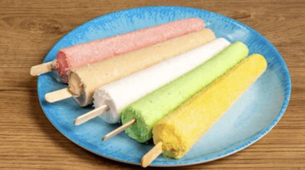
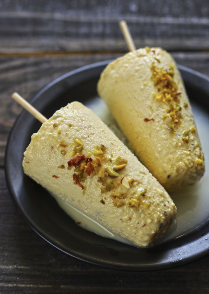

Premium Ingredients
Only the finest milk, nuts, saffron, and real fruit — no shortcuts, ever.
Artisan kulfi made the way Mary remembers from Islamabad — rich, creamy, and crafted with love in Orange County. Kulfi nahi, feel hai yaar!
Premium ingredients, small-batch craft, and flavors that honor Pakistani tradition with a modern royal twist.
Only the finest milk, nuts, saffron, and real fruit — no shortcuts, ever.
Recipes inspired by the kulfi carts and family kitchens of Islamabad.
Made to order in small batches so every stick is creamy perfection.
Ten handcrafted flavors — plus seasonal specials that rotate throughout the year.

Rich chocolate layered with pistachio kunafa crunch — our #1 bestseller.
Bestseller
Classic pista with roasted pistachios folded into every creamy bite.

Caramelized cookie butter swirled through velvety malai kulfi.

Mary grew up in Islamabad, where kulfi was a joyful part of her childhood. After moving to America, she spent years searching for authentic kulfi but could never find the taste she remembered.
She began experimenting with her own recipes using premium, high-quality ingredients. After perfecting them, she shared them with friends — and everyone told her she needed to start a business.
That passion became Kulfi Kueen.
Read Mary's Story"The Dubai Chocolate kulfi is unreal. Tastes like something you'd find in Karachi but made right here in OC."— Aisha R., Irvine
"Mary's pistachio kulfi brought me right back to my childhood in Lahore. Absolutely authentic."— Omar K., Anaheim
"Ordered for a family gathering — everyone asked where I got them. Already placed my second order!"— Priya M., Newport Beach
Pickup in Orange County, CA. Place your order and pay via Venmo or Zelle.
Order Now